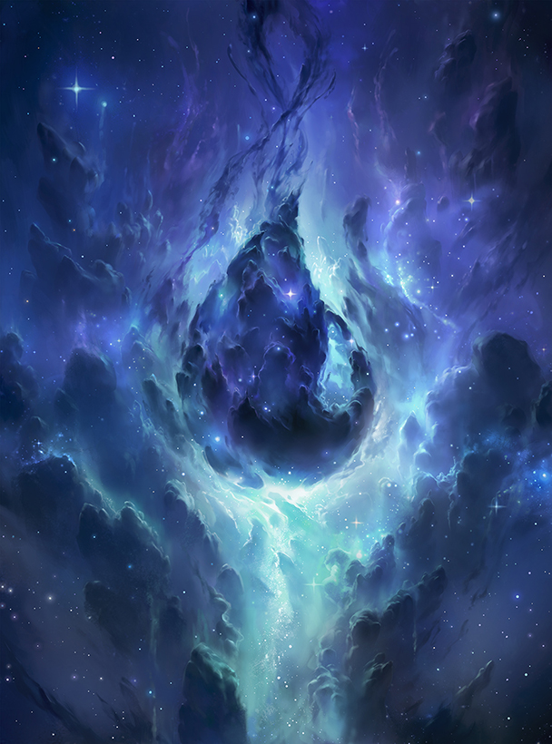
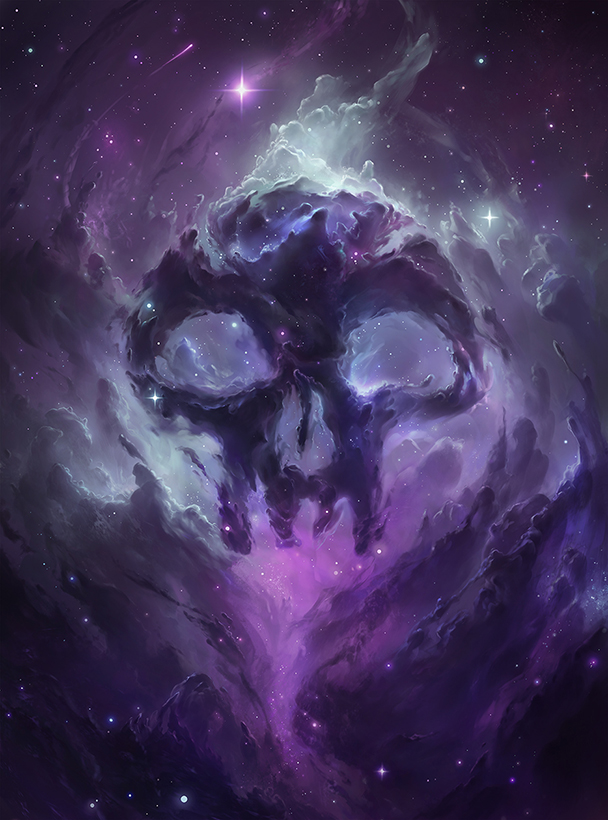
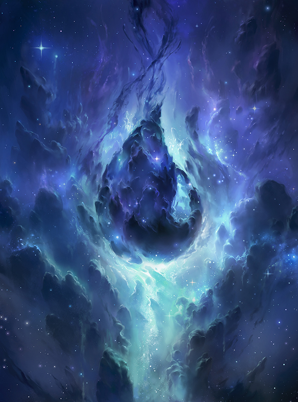
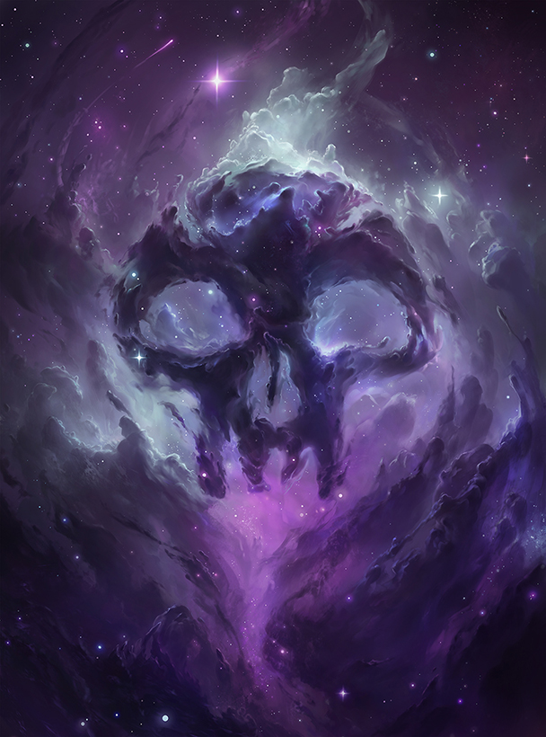
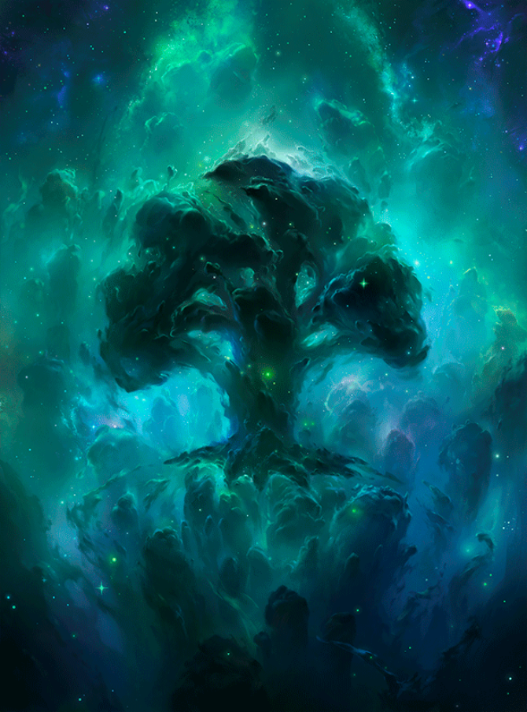
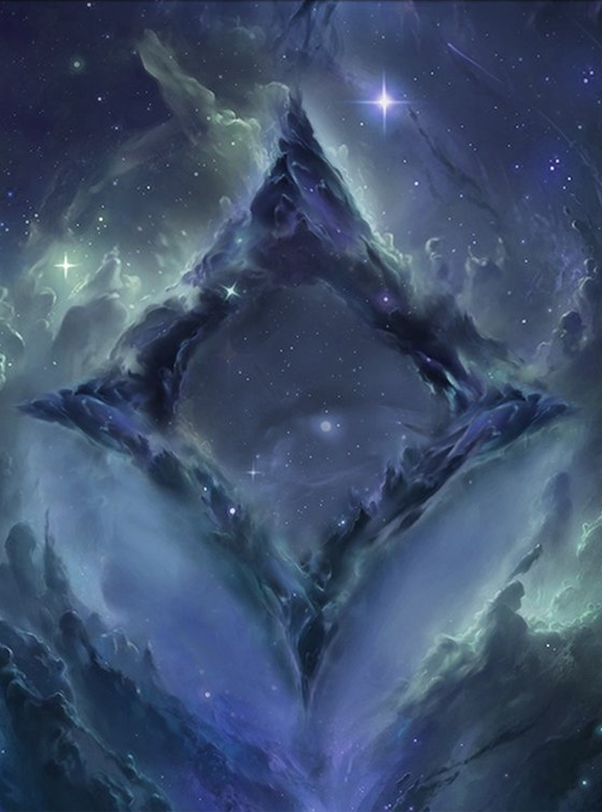
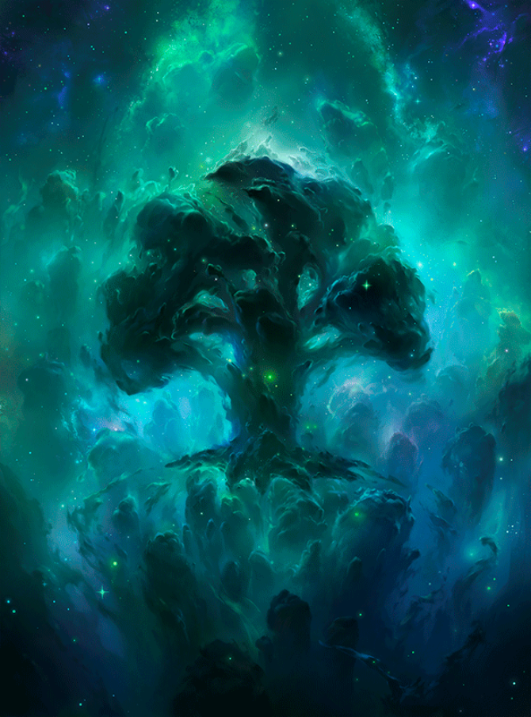
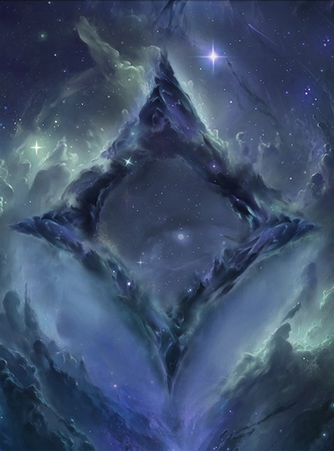

 



El color blanco en Magic the Gathering representa la virtud, la ley y la justicia. Los mazos blancos a menudo incluyen criaturas defensivas y de soporte, hechizos de curación y protección, y efectos que exilian o remueven permanentemente a las criaturas enemigas. Los mazos blancos también tienden a enfocarse en la estrategia de juego a largo plazo y el control del campo de batalla, en lugar de buscar la victoria rápida. En resumen, el color blanco se enfoca en la defensa, la justicia y la protección de los demás.
El color azul se enfoca en el conocimiento, la lógica, la inteligencia y la manipulación. Los magos azules son expertos en el control y la manipulación de hechizos, y valoran el poder de la información y el conocimiento por encima de todo. El azul busca siempre entender y conocer el mundo, y utiliza la reflexión y la estrategia para alcanzar sus objetivos. El color azul también se asocia con la ilusión, la evasión y la habilidad para negar o contrarrestar los hechizos de otros colores.
El color negro se enfoca en la ambición y el poder a cualquier costo. El negro está dispuesto a hacer cualquier cosa para lograr sus objetivos, incluso si eso significa sacrificar su propia vida o la de los demás. La muerte y la decadencia son temas comunes en el color negro, y a menudo se asocia con la magia oscura y el necromancia. El negro también valora la individualidad y la autosuficiencia, y no tiene miedo de tomar decisiones difíciles y enfrentarse a los riesgos. En cuanto a su estilo de juego, el negro se centra en la eliminación de criaturas, el sacrificio de recursos para obtener ventaja y la manipulación del cementerio.

El color rojo en Magic: The Gathering se asocia con la pasión, la emoción y la impulsividad. Los hechizos rojos a menudo se centran en la destrucción, la velocidad, la agresión y la emoción desenfrenada. El color rojo a menudo busca ganar rápidamente a través de ataques directos y poderosos hechizos de daño directo, en lugar de esperar y acumular fuerzas. Los hechizos de rojo también se asocian con el caos y la aleatoriedad, y algunos efectos pueden depender de lanzamientos de moneda o elecciones aleatorias. En resumen, el rojo se caracteriza por ser un color de acción, emoción y destrucción rápida.

El color verde se enfoca en la naturaleza y en la vida. Es el color de la fuerza, la perseverancia y el crecimiento. Los usuarios de la magia verde buscan la armonía con el mundo natural y la exploración de la sabiduría ancestral. El verde se asocia con criaturas grandes y poderosas, como bestias y gigantes, y con la capacidad de convocar criaturas y efectos que refuercen la fuerza y el tamaño de sus criaturas. Además, el verde se relaciona con la regeneración y la resistencia, permitiendo a sus criaturas recuperarse de daños y permanecer en el campo de batalla por más tiempo.
El color incoloro representa la ausencia de cualquier color de mana, y se utiliza en cartas que tienen un costo de mana incoloro. Es el color del artefacto y, por lo tanto, muchas de las cartas incoloras son artefactos o tienen que ver con ellos. Los artefactos son cartas que representan objetos o dispositivos mecánicos que pueden ser usados por cualquier color de mana. Por esta razón, se considera que el color de los artefactos es incoloro. Los artefactos pueden proporcionar una variedad de efectos y habilidades, desde la generación de recursos como maná, hasta el aumento de la potencia de criaturas, pasando por la capacidad de destruir o anular los efectos de los colores del maná. En general, el color incoloro se asocia con la tecnología, la precisión y la eficiencia.